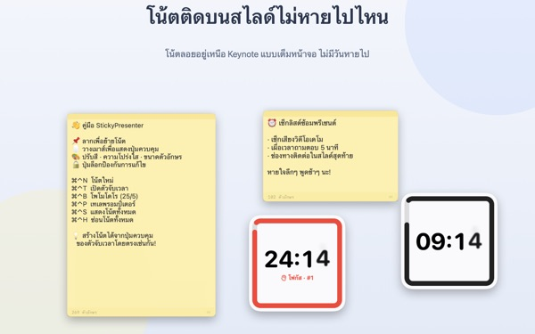
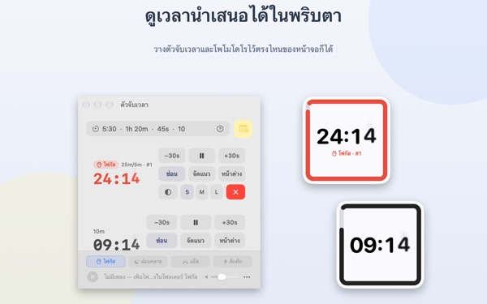
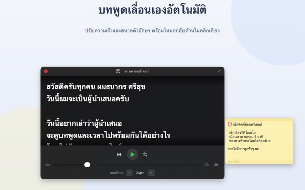
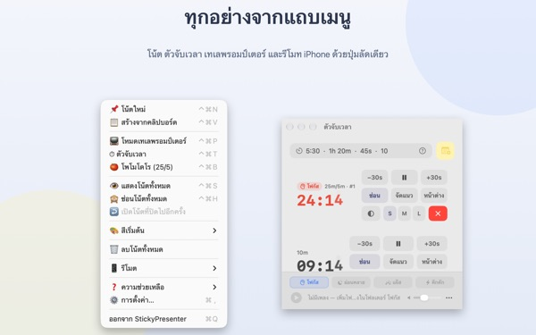

บทพูดและเวลาที่เหลือ
อยู่บนสไลด์เลย
เปิด Keynote แบบเต็มจอแล้ว โน้ตและตัวจับเวลาก็ยังลอยอยู่ด้านบน และไม่แย่งโฟกัสจากแอปนำเสนอ รีโมตเปลี่ยนสไลด์จึงใช้ได้ตามปกติ
ทุกฟีเจอร์ใช้ได้ฟรี รองรับ macOS 14 ขึ้นไป

ลองวางบนสไลด์ดู
พิมพ์เวลาแบบเดียวกับในแอป แตะ 15s เพื่อดูว่าวิดเจ็ตเตือนอย่างไรเมื่อใกล้หมดเวลา
ระหว่างนำเสนอ คุณวางบทพูดกับนาฬิกาไว้ตรงไหน
มุมมองผู้นำเสนอต้องใช้จออีกจอ ส่วนการก้มดูนาฬิกาข้อมือ ผู้ฟังก็สังเกตเห็นทุกครั้ง บางทีคุณอาจเคยแปะกระดาษโน้ตไว้ที่โน้ตบุ๊กแล้วมันหลุดร่วงไป StickyPresenter ปักบทพูดและเวลาที่เหลือไว้เหนือสไลด์ ตรงที่สายตาคุณมองอยู่แล้ว
เหลือบมองครั้งเดียวก็รู้ว่าเหลือเวลาเท่าไร
วิดเจ็ตสี่เหลี่ยมที่มุมจอแสดงเวลาที่เหลือ พอใกล้หมดเวลาจะเปลี่ยนเป็นสีแดง และเมื่อหมดเวลาจะมีเสียงเตือนพร้อมขอบกะพริบ
พิมพ์เวลาได้ตามสะดวก เช่น 5:30 หรือ 1h 20m และถ้าพิมพ์ 25/5 จะเป็นโพโมโดโรที่สลับโฟกัสกับพัก เปิดตัวจับเวลาเป็นหน้าต่างแยกเพื่อแชร์เฉพาะหน้าต่างนั้นผ่านการแชร์หน้าจอหรือ AirPlay ได้

อ่านบทพูดไปพร้อมมองกล้อง
เทเลพรอมป์เตอร์เลื่อนบทพูดตามความเร็วที่ตั้งไว้ และหยุดเองเมื่อถึงท้ายบท คัดลอกบทพูดแล้วกด ⌘⌃P ก็จะเปิดขึ้นพร้อมข้อความนั้นทันที
มีโหมดกลับด้านซ้ายขวาสำหรับอุปกรณ์พรอมป์เตอร์ที่ใช้กระจกสะท้อน และความเร็วกับขนาดตัวอักษรจะคงไว้สำหรับครั้งหน้า

ไม่ต้องละจากสไลด์
ทำงานเงียบๆ ในแถบเมนู ไม่มีไอคอนใน Dock และไม่มีหน้าต่างให้คอยดูแล คีย์ลัดอย่าง ⌘⌃N สำหรับโน้ตใหม่ หรือ ⌘⌃T สำหรับตัวจับเวลา ใช้ได้แม้ตอนนำเสนอ Keynote แบบเต็มจอ
บนเวที ใช้แอป iPhone ฟรี Remote Controller for Sticky เพื่อเริ่มหรือหยุดตัวจับเวลา และย้ายวิดเจ็ตออกเมื่อมันบังสไลด์

เริ่มได้ใน 3 ขั้นตอน
- 1
เปิดแอป
ไอคอนโน้ตจะขึ้นที่แถบเมนู และครั้งแรกจะมีคู่มือการใช้งานสั้นๆ เปิดขึ้นมา
- 2
วางโน้ตและตัวจับเวลา
คัดลอกบทพูดแล้วกด
⌘⌃Vจากนั้นพิมพ์ความยาวการนำเสนอลงในช่องตัวจับเวลา - 3
เปิดสไลด์แบบเต็มจอ
โน้ตและตัวจับเวลายังอยู่ด้านบนเหมือนเดิม
คีย์ลัดและรูปแบบการพิมพ์เวลา
- ⌘⌃N
- โน้ตใหม่
- ⌘⌃V
- สร้างโน้ตใหม่จากข้อความที่คัดลอกไว้
- ⌘⌃T
- แสดงหรือซ่อนตัวจับเวลา
- ⌘⌃B
- เริ่มโพโมโดโร (โฟกัส 25 นาที พัก 5 นาที)
- ⌘⌃P
- เทเลพรอมป์เตอร์
- ⌘⌃S · ⌘⌃H
- แสดงหรือซ่อนโน้ตทั้งหมด
- 10
- ตัวเลขอย่างเดียวหมายถึงนาที (10 นาที)
- 5:30 · 1:15:00
- นาที:วินาที, ชั่วโมง:นาที:วินาที
- 1h 20m · 45s
- ใส่หน่วยกำกับ
- 25/5
- โฟกัส/พัก วนไปจนกว่าจะหยุด
คีย์ลัดทั้งหมดกด Command (⌘) กับ Control (⌃) พร้อมกัน และใช้ได้แม้กำลังอยู่ในแอปอื่น ตั้งเวลาได้สูงสุด 99:59:59
คำถามที่พบบ่อย
ฟรีจริงไหม
ฟรีจริง ทุกฟีเจอร์ใช้ได้ฟรี และแอป iPhone Remote Controller for Sticky ก็เป็นแอปฟรีแยกต่างหาก ถ้าชอบแอปนี้ คุณให้ทิปผู้พัฒนาได้ในการตั้งค่า แต่ทิปไม่ได้ปลดล็อกอะไรเพิ่ม
แชร์หน้าจอหรือสะท้อนหน้าจอโดยให้เห็นแค่ตัวจับเวลาได้ไหม
ได้ กดปุ่ม หน้าต่าง ในแถวของตัวจับเวลาเพื่อเปิดเป็นหน้าต่างปกติ แล้วมันจะไปอยู่ในรายการหน้าต่างของการแชร์หน้าจอและ AirPlay ให้เลือกแชร์เฉพาะหน้าต่างนั้นได้
ซ่อนวิดเจ็ตตัวจับเวลาไว้แล้วหาไม่เจอ
ในหน้าต่างตัวจับเวลา เลื่อนเมาส์ไปวางบนแถวของตัวจับเวลานั้น ตำแหน่งของวิดเจ็ตจะแสดงเป็นเส้นประ กด จัดแนว เพื่อเรียกกลับมาไว้ข้างหน้าต่างตัวจับเวลา
เผลอปิดโน้ตไป
ใช้ เปิดโน้ตที่ปิดไปอีกครั้ง ในแถบเมนูเพื่อกู้คืนโน้ตล่าสุดได้ถึง 20 แผ่น โน้ตบันทึกทันทีที่พิมพ์ และกลับมาอยู่ที่เดิมเมื่อเปิดแอปใหม่
คีย์ลัดไม่ทำงาน
ถ้าตารางคีย์ลัดในคู่มือแสดงว่า ถูกใช้โดยแอปอื่น แปลว่ามีแอปอื่นจองคีย์นั้นไว้ก่อน ปิดแอปนั้นแล้วคีย์ลัดจะกลับมาใช้ได้ ไม่ต้องให้สิทธิ์การช่วยการเข้าถึง
ทำไมธีมกิ้งก่าถึงขอสิทธิ์บันทึกหน้าจอ
ธีมกิ้งก่าจะอ่านสีของหน้าจอด้านหลังวิดเจ็ตเพื่อปรับสีให้เข้ากัน จึงต้องใช้สิทธิ์นี้ โดยจะไม่บันทึกหรือส่งภาพหน้าจอไปไหน ถ้าไม่ให้สิทธิ์ ธีมระบบ สว่าง และมืด ก็ยังใช้ได้ตามปกติ
จะใส่เพลงประกอบได้อย่างไร
เลือกบรรยากาศ (โฟกัส ผ่อนคลาย แจ๊ส หรือคึกคัก) ในแถบเพลงด้านล่างของหน้าต่างตัวจับเวลา แอปจะสร้างโฟลเดอร์ของแต่ละบรรยากาศให้ ใส่เพลงของคุณลงไป แล้วเพลงจะเล่นตามลำดับพร้อมตัวจับเวลา แอปไม่มีเพลงมาให้
รีโมตบน iPhone หา Mac ไม่เจอ
ตรวจตามลำดับนี้ StickyPresenter เปิดอยู่บน Mac หรือไม่ (ดูไอคอนในแถบเมนู) ทั้งสองเครื่องต่อ Wi‑Fi เดียวกันหรือไม่ (เครือข่ายสำหรับแขกหรือเน็ตมือถือใช้ไม่ได้) อนุญาต เครือข่ายเฉพาะที่ ใน ความเป็นส่วนตัวและความปลอดภัย ทั้งบน iPhone และ Mac แล้วหรือยัง และปิด VPN แล้วหรือยัง
รีโมตบอกว่ารหัสจับคู่ไม่ถูกต้อง
ใส่รหัส 4 หลักที่แสดงอยู่ตอนนี้ในเมนู รีโมต บนแถบเมนูของ Mac ถ้าเคยกด สร้างรหัสจับคู่ใหม่ จะใช้ได้เฉพาะรหัสใหม่ หลังจับคู่ครั้งแรกแล้ว ครั้งต่อไปแค่เปิดแอปก็เชื่อมต่อเอง
คนอื่นจะควบคุมตัวจับเวลาของฉันได้ไหม
ไม่ได้ถ้าไม่รู้รหัส Mac รับเฉพาะรีโมตที่ใส่รหัสถูก และสื่อสารผ่านการเชื่อมต่อตรงแบบเข้ารหัสภายในเครือข่ายเดียวกันเท่านั้น ถ้ามีคนเห็นรหัสไปแล้ว ให้กด สร้างรหัสจับคู่ใหม่ หรือ ลืมรีโมตที่จับคู่ไว้ ในเมนู รีโมต
โน้ตและบทพูดเก็บไว้ที่ไหน
เก็บไว้ใน Mac เครื่องนี้เท่านั้น ไม่มีบัญชี ไม่มีโฆษณา และไม่มีอะไรออกไปทางอินเทอร์เน็ต นอกจากสถิติการใช้งานแบบไม่ระบุตัวตนและความคิดเห็นที่คุณส่งเอง
มีคำถาม เจอปัญหา หรืออยากเสนอไอเดีย ส่งอีเมลมาที่ mizzking75@gmail.com